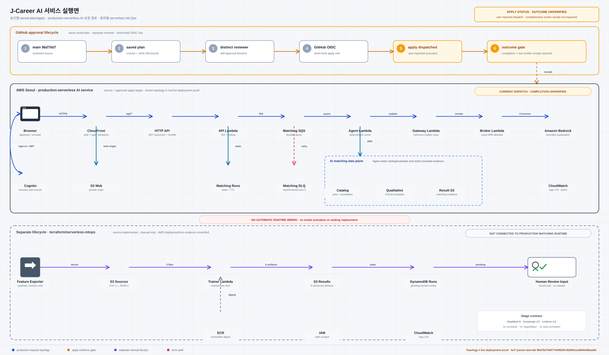

구직자 경험
프로필과 이력서를 관리하고 맞춤 공고를 확인합니다. 관심 있는 공고에는 바로 지원하고 진행 상태를 이어서 볼 수 있습니다.
서비스·클라우드 아키텍처 · 2026.08
업무망과 GitHub delivery부터 AWS 요청 경로, LLM Gateway·Bedrock·OpenDART, 별도 MLOps까지 서로 닿는 지점을 한 장에 표시합니다. 구현·적용·미확인 상태는 같은 뜻으로 섞지 않습니다.
서비스 한눈에 보기
J-Career는 구직자와 기업이 서로 맞는 선택지를 빠르게 좁혀 가도록 돕습니다. 추천 점수와 이유를 함께 보여 주고, AI 학습 결과는 사람 검토 대기에서 멈추며 현재 추천 흐름에는 연결하지 않습니다.
프로필과 이력서를 관리하고 맞춤 공고를 확인합니다. 관심 있는 공고에는 바로 지원하고 진행 상태를 이어서 볼 수 있습니다.
채용 공고를 등록하고 자사 공고에 지원한 후보를 조건별로 비교합니다. 최대 3명을 한 화면에서 살펴볼 수 있습니다.
기술 70%, 경력 20%, 직무 10%의 기준으로 조건 일치도를 계산합니다. 설명 생성은 점수 계산과 분리해 결과의 이유만 정리합니다.
합성 데이터로 후보 모델을 학습하고 결과와 실행 기록을 남깁니다. 자동 승격 경로가 없고 현재 추천 흐름에도 연결하지 않습니다.
구성 범위
서비스 기능, AWS 인프라, AI 모델 검증과 업무 단말은 서로 연결되지만 확인 기준은 다릅니다. 각 영역의 역할과 현재 검증 범위를 따로 정리했습니다.
01 · 기준 설계
서울 리전의 두 가용 영역에 web·API·agent·LLM Gateway 네 서비스와 데이터·보안·관측 구성을 배치합니다. Terraform 기준 계획 110개는 미배포 설계입니다.
02 · 서비스 구현
로그인과 공고 등록, 지원, 양방향 추천, AI 설명 흐름을 확인할 수 있는 웹·API 구현 범위를 정리했습니다.
03 · 모델 검증
S3·ECR·DynamoDB·IAM·CloudWatch Logs 기반 13개는 적용됐습니다. 이미지 게시와 Lambda runtime 실행은 없고 서비스 반영 전 사람 검토 경계를 유지합니다.
04 · 단말 보안
골든 이미지와 MDM 기준선을 배포된 단말의 실제 상태와 분리합니다. Windows 검증용 AWS 경로, 물리 Mac 우선 경로와 Slack 운영 미확인 경계를 함께 설명합니다.
05 · 검증 환경
공개 접속 포트를 두지 않고 AWS Systems Manager로 관리하는 단기 검증 환경입니다. 비용과 배포 결과는 별도 기록으로 관리합니다.
데이터 아키텍처 확장안
PostgreSQL 서비스 1개 안에 논리 데이터베이스 3개를 둡니다. 회원, 기업, 분석 참고 데이터를 역할별로 나누고 Redis 캐시는 데이터 저장소와 별도로 둔 구조입니다.
구조 정의 완료 · API 참고 정보 연계 · 화면 연계 검토 중 · AWS 실행 결과는 별도 상태표에서 관리
회원 계정과 이력서, 지원 기록을 관리합니다.
기업 고객과 채용 공고, 공개 기업 정보를 관리합니다.
합성 문서 평가 결과와 데이터셋 정보를 분리해 보관합니다.
빠른 조회를 위한 Redis입니다. 세 데이터베이스에는 포함하지 않습니다.
기술 표기: PostgreSQL 서비스 1개 · 논리 DB 3개 · Redis 캐시 별도
추천 API의 참고 항목으로만 연결하며 점수 계산, 정렬 순위, 모델 학습에는 사용하지 않습니다. 화면 연계는 다음 검토 항목입니다.
전체 인프라
승인형 saved-plan apply 대상인 production-serverless AI 요청 경로와, 자동 연결되지 않은 serverless MLOps 수명주기를 분리했습니다. 최신 소스 a9764f8는 plan run 33569358467 attempt 1·plan SHA-256 c0e596e2…까지 성공했고 APPLY · LIVE SMOKE NOT RUN 상태입니다. 마지막으로 관찰된 배포는 별도 revision 7a5acfb·run 33466745822입니다.

파란 실선은 production 요청 topology, 보라색은 별도 MLOps 수명주기입니다. 주황색 점선은 현재 apply 완료 증거가 아직 확인되지 않았음을 뜻합니다.
읽는 관점
아래 화살표나 키보드 방향키로 관점을 바꾸면, 각 사용자가 이 구조에서 먼저 확인할 내용을 짧게 볼 수 있습니다.
프로필과 공고 조건을 비교한 점수와 설명을 함께 보고, 관심 있는 공고의 지원 상태를 이어서 확인합니다.
기업 고객은 자신이 등록한 공고의 지원자만 확인합니다. 필터와 최대 3명 비교는 서버가 준 추천 순서를 바꾸지 않습니다.
Terraform 계획, 애플리케이션 구현, AWS 배포 검증을 같은 뜻으로 섞지 않습니다. 각 화면에서 근거와 아직 확인하지 않은 범위를 함께 표시합니다.
설계 상태 관리
AWS 2-AZ 기준선과 운영 성능은 후속 검증 기록으로 관리합니다. 별도 MLOps bootstrap 13개 적용은 runtime 배포와 분리해 표시합니다.
110개는 Terraform이 계산한 생성 예정 항목입니다. AWS 배포 여부와 실행 이미지는 별도 검증 대상입니다.
기본 설정은 0개이고 bootstrap 13개는 적용됐습니다. 14번째 Lambda runtime과 이미지 게시·실행·자동 승격은 아직 없습니다.
현재 검증은 합성 데이터를 기준으로 합니다. 운영 데이터 반입에는 별도의 승인 절차와 고객사 분리 통제가 필요합니다.
현 단계의 비교 수치는 조건 일치도를 살펴보는 데 사용합니다. 합격 가능성이나 인재 수준을 자동 판정하는 값에서는 제외합니다.
관찰 상태
설계, AWS Lab, 애플리케이션과 외부 연계를 따로 적었습니다. 한 항목의 성공을 다른 항목의 성공으로 넓혀 읽지 않습니다.
AWS에 접속하지 않은 모의 계획입니다. 2-AZ, 6개 모듈, 생성 예정 110개이며 terraform/asis 적용 결과가 아닙니다.
별도 24개 생성 계획을 다시 실행했지만 같은 권한에서 멈췄습니다. 부분 생성 16개를 지운 뒤 2026-08-30 21:17 KST에 관련 자원 0개를 다시 확인했습니다.
과거 기동 기록은 있으나 이후 소스가 바뀌었습니다. 최신 전체 실행 경로는 다시 확인해야 합니다.
합성 문장 한 건의 모델 응답은 확인했습니다. 애플리케이션을 거치지 않은 별도 시험입니다.
API→설명 게이트웨이→권한 중계기→Bedrock 경로는 IAM 역할을 만들지 못해 실행하지 못했습니다.
외부 조회는 관찰하지 않았습니다. 합성 예시와 작업자 빌드·검사 준비는 실조회 증거가 아닙니다.
bootstrap 13개 기반은 적용됐습니다. ECR 이미지 게시, 14번째 Lambda 배포·실행, 결과 생성과 추천 연결은 없습니다.
180대는 시나리오 입력입니다. Windows 3대와 macOS 3대 검토 표본도 실제로 관찰하지 않았습니다.
고객사 AWS에 직접 연결하지 않습니다. 운영 전에는 사용자별 인증, 고객사 분리, 감사 기록과 승인된 복사본 반입이 필요합니다.
다음 확인
서비스 버튼을 누르면 같은 인프라 위에서 관련 구간과 단계 설명이 함께 바뀝니다.